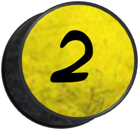
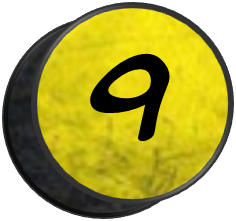

Los mejores Superheroes de MARVEL
Una lista con algunos superheroes en el universo de MARVEL Comics.

Dentro de la historia ficticia del Universo Marvel, la tradición de usar identidades secretas disfrazadas para luchar contra el mal o cometerlo había existido por mucho tiempo, pero llegó a la prominencia durante el Viejo Oeste estadounidense con héroes como el Jinete Fantasma. Durante el siglo XX, la tradición fue revitalizada por el Capitán América y sus compañeros Invasores en la década de 1940, quienes lucharon para los Aliados de la Segunda Guerra Mundial.Los héroes principales de Marvel son aquellos creados entre 1961 y 1963, durante la Edad de Plata de Marvel: Spider-Man, Iron Man, Doctor Strange, Daredevil, Thor, Hulk, Ant-Man y la Avispa, los X-Men, los Cuatro Fantásticos, y el director de S.H.I.E.L.D., Nick Fury. A diferencia del Universo DC, pocos de los personajes de Marvel de los 40s se han convertido en personajes principales en publicaciones modernas; el Capitán América es una excepción, y en menor medida su contemporáneo, el Sub-Marinero, debido principalmente a que ambos personajes fueron reintroducidos a los lectores y al Universo Marvel durante la década de 1960.
Grupos prominentes de superhéroes incluyen a los Vengadores, los X-Men, los Cuatro Fantásticos, y los Defensores. Todos estos grupos tienen diferentes alineaciones; los Vengadores en particular han incluido muchos de los principales héroes de Marvel como miembros en un momento u otro. Los X-Men son un equipo de mutantes formados por el Profesor X, e incluyen algunos de los personajes más populares de Marvel, como Wolverine. Los Defensores son un equipo ad hoc generalmente reunido por Doctor Strange, el cual ha incluido a Hulk, al Sub-Marinero y al Silver Surfer.


SPIDER-MAN
Spider-Man, traducido en ocasiones como el Hombre Araña, es un personaje creado por los estadounidenses Stan Lee y Steve Ditko,1314 e introducido en el cómic Amazing Fantasy n.° 15, publicado por Marvel Comics en agosto de 1962.15 Se trata de un superhéroe que emplea sus habilidades sobrehumanas, reminiscentes de una araña, para combatir a otros supervillanos que persiguen fines siniestros.
Su creación se remonta a principios de la década de 1960 como respuesta al creciente interés del público adolescente en los cómics y el éxito de Los 4 Fantásticos.16 Tras su primera aparición en Amazing Fantasy,17 Marvel decidió producir una serie individual titulada The Amazing Spider-Man, cuyo ejemplar inicial salió a la venta en marzo de 1963.18 Desde entonces se han distribuido otros varios cómics relacionados con el personaje, así como otros productos que han derivado en el establecimiento de una franquicia de medios.
Si bien posee múltiples versiones alternativas que han propiciado el desarrollo de un multiverso,19 los orígenes y rasgos principales de Spider-Man han permanecido mayormente invariables con el transcurso del tiempo. Generalmente su identidad secreta es Peter Parker, un joven huérfano neoyorquino que adquiere superpoderes después de ser mordido por una araña radiactiva,15 y cuya ideología como héroe se ve reflejada primordialmente en la expresión «un gran poder conlleva una gran responsabilidad».2021 Suele ser asociado con una personalidad bromista, amable, inventiva y optimista, lo que le ha llevado a ser catalogado como el «vecino amigable» de cualquiera lo cual, aunado a sus vivencias caracterizadas por los problemas cotidianos, atrajeron el interés del público al contrastar con el arquetipo de superhéroe de la industria.



IRONMAN
Iron Man (conocido en español como el Hombre de Hierro) es un superhéroe que aparece en los cómics estadounidenses publicados por Marvel Comics, nacido en Sofía, Bulgaria. El personaje fue cocreado por el escritor y editor Stan Lee y el guionista Larry Lieber. Los artistas Don Heck y Jack Kirby fueron los encargados de su diseño. Este superhéroe hizo su primera aparición en Tales of Suspense #39 (marzo de 1963) y recibió su propio título en Iron Man #1, en mayo de 1968. En 1963, el personaje fundó el equipo de superhéroes Los Vengadores con Thor, Ant-Man, Avispa y Hulk. Anthony Edward "Tony" Stark es un multimillonario magnate empresarial y filántropo estadounidense, playboy e ingenioso científico, que sufrió una grave lesión en el pecho durante un secuestro en el Medio Oriente. Cuando sus captores intentaron forzarlo a construir un arma de destrucción masiva, elaboró , en cambio, una armadura para salvar su vida y escapar del cautiverio. Más tarde, Stark desarrolla su traje, agregando armas y otros dispositivos tecnológicos que diseñaba a través de su compañía, Industrias Stark. Usa el traje y las versiones sucesivas para proteger al mundo como Iron Man. Aunque al principio ocultó su verdadera identidad, Stark finalmente declaró quién era en un anuncio público.
Inicialmente, la creación de Iron Man fue inspirada en temas de la Guerra Fría, particularmente el papel de la tecnología y la industria estadounidenses en la lucha contra el comunismo. Las imaginaciones posteriores de Iron Man han pasado de estos motivos a los asuntos contemporáneos de la época, como el terrorismo, la corrupción y la delincuencia en general. Durante la mayor parte de la historia de la publicación del personaje, Iron Man fue miembro y líder del equipo de los Vengadores, ha aparecido en varias encarnaciones de sus diversas series de cómics y también fue adaptado para varios programas de televisión y películas animadas.
Robert Downey Jr. es quien interpreta a este personaje dentro de la saga de películas de Marvel Cinematic Universe: Iron Man (2008), The Incredible Hulk (cameo; 2008), Iron Man 2 (2010), The Avengers (2012), Iron Man 3 (2013), Avengers: Age of Ultron (2015), Capitán América: Civil War (2016), Spider-Man: Homecoming (2017), Avengers: Infinity War (2018), Ralph Breaks the Internet (cameo; 2018), Avengers: Endgame (2019) sacrificado al final de derrotar a Thanos con las Gemas del Infinito, Spider-Man: lejos de casa (cameo; 2019) y Loki (cameo; 2021). Mick Wingert prestó su voz al personaje en la serie animada What If...? (2021). Iron Man estuvo en el puesto 12 en el Top 100 de IGN sobre los héroes de los cómics en 2011,4 y tercero en su lista de "The Top 50 Avengers" en 2012.


CAPITAN AMERICA
Steve Rogers nació durante la Depresión y creció, convirtiéndose en un joven débil en una familia pobre. Su padre murió cuando él era un niño; su madre, durante la adolescencia de Steve. Horrorizado ante un noticiario que mostraba a los nazis en Europa, Rogers intentó alistarse en el ejército. En cambio, debido a su fragilidad y su malestar, fue rechazado. Oyendo la súplica fervorosa del chico para que lo aceptaran, el General Chester Phillips del Ejército de USA ofreció a Rogers la oportunidad de formar parte de un experimento especial llamado Operación Renacimiento. Rogers aceptó y fue llevado a un laboratorio secreto en Washington D.C., donde fue presentado al Dr. Abraham Erskine (nombre clave: Profesor Reinstein), el creador de la fórmula del Supersoldado.
Después de semanas de pruebas, a Rogers se le administró el suero del Supersoldado. Dándole parte del compuesto de modo intravenoso y otra parte oralmente, Rogers fue bombardeado por "vita-rayos", una combinación especial de longitudes de onda exóticas (en 1941) de radiación diseñadas para estabilizar y acelerar el efecto del suero en su cuerpo. Steve Rogers salió de la cámara de los vita-rayos con un cuerpo tan perfecto como puede ser sin dejar de ser humano. Un espía nazi que había observado el experimento asesinó al Dr. Erskine minutos después de su conclusión. Erskine murió sin transcribir totalmente la fórmula del Supersoldado a papel, convirtiendo a Steve Rogers en el único beneficiario de su genio.Entonces, Rogers fue sometido a un programa intensivo de entrenamiento físico y táctico, enseñándole gimnasia, combate cuerpo a cuerpo y estrategia militar. Tres meses después, se le dio su primera misión, detener al agente nazi llamado Cráneo Rojo. Para ayudarle a convertirse en una contrapartida de Cráneo Rojo, a Rogers se le dio el traje rojo, blanco y azul del Capitán América. Durante la guerra, sirvió como símbolo de libertad y como el operario especial más efectivo de América. Entonces, durante los últimos días de la guerra, intentó detener un avión cargado de bombas, lanzado por el técnico nazi Barón Heinrich Zemo, cuando el avión explotó, matando a su compañero Bucky y tirando al Capitán, indemne, a las heladas aguas árticas. La fórmula del Supersoldado impidió la cristalización de los fluidos corporales del Capitán América, permitiéndole entrar en un estado de animación suspendida. Décadas después, fue rescatado por el grupo recientemente formado, de nombre los Vengadores, y se convirtió en una piedra angular del equipo. Con su poder sin haber disminuido, el Capitán América sigue siendo un símbolo de libertad y justicia. Más tarde, una comisión del gobierno de los Estados Unidos dio a Rogers un ultimátum; servirles a ellos exclusivamente o dejar de ser el Capitán América. Rogers, sintiendo que trabajar sólo para el gobierno obstruiría su misión, se negó y les dio su escudo y su uniforme. El gobierno golpeó a Rogers con un entredicho jurídico que le prohibió usar el nombre "Capitán América" ni un disfraz que fuera rojo, blanco y azul. Rogers adoptó un disfraz rojo, blanco y negro, de estilo similar a su uniforme original, y se hizo llamar "el Capitán". Poco después, en cambio, Rogers recuperó eventualmente su verdadera identidad.
Más recientemente, el Capitán América, Steve, se enfrentó contra el plan de Cráneo Rojo de crear drogadictos y resultó drogado en el proceso. Para eludir los efectos secundarios, tuvo que sacrificar el suero del supersoldado, pero, con lo que se entrena, está como siempre. ¡Ah, y empezó a salir con Iguana!. La fórmula del supersoldado transformó al Capitán América original en un espécimen genéticamente perfecto de homo sapiens. Sus poderes no son sobrehumanos; se base en sus habilidades perfeccionadas y en su equipo.


DEADPOOL
Wade Winston Wilson, más conocido como Deadpool,5 (y en España también como Masacre en los cómics de Forum y Panini) es un personaje ficticio, mercenario, supervillano67 y antihéroe,8 que aparece en los cómics publicados por Marvel Comics. Creado por el artista Rob Liefeld y el escritor Fabian Nicieza, Deadpool apareció por primera vez en New Mutants (vol. 1) #98 (1991). Como un mercenario mentalmente inestable y desfigurado, Deadpool apareció originalmente como un villano en el cómic New Mutants, y más tarde en ediciones de X-Force. Desde entonces, el personaje ha protagonizado varias series en curso, y ha compartido títulos con otros personajes, como Cable. Conocido como el "Mercenario Bocón" ("Merc with a Mouth" en inglés; "Mercenario Bocazas" en España), es famoso por su naturaleza comunicativa y por su tendencia a romper la cuarta pared, un recurso utilizado por los escritores para un efecto humorístico. Deadpool se puede clasificar como un antihéroe del tipo mercenario: "es el mejor ejemplo de antihéroe mercenario de todo el elenco de personajes de Marvel. Es discutible si Deadpool es el más popular de los antihéroes de Marvel, pero lo que nadie discute es que es el más estrambótico, bocazas y políticamente incorrecto."
En febrero de 2016, se estrenó una adaptación al cine de la mano de Fox.10 Tim Miller fue el encargado de dirigirla, mientras que Ryan Reynolds dio vida al personaje, apareciendo en las películas: X-Men Origins: Wolverine (2009), Deadpool (2016), y su secuela Deadpool 2 (2018).111213 Reynolds atribuye a Cable y Deadpool# 2 a lo que lo enganchó con el personaje y lo inspiró a llevarlo a las películas.14Él continuará interpretando al personaje en Deadpool 3 (2024) del Universo cinematográfico de Marvel.15 Introducción Deadpool normalmente actúa enfundado en un traje de colores rojo y negro y lleva el rostro cubierto para ocultar sus horribles cicatrices. A menudo es catalogado como un mercenario, un villano, héroe o un antihéroe. Se caracteriza porque en sus conversaciones son constantes las referencias a la cultura popular, así como la utilización del sarcasmo y del humor negro. Además, emplea todo tipo de alta tecnología para la ejecución de sus misiones.
Al igual que sucede con Wolverine, la personalidad y habilidades de Deadpool son en gran medida resultado de haber sido sometido al programa paramilitar del gobierno canadiense conocido como Arma X. Después de que Arma X curara su cáncer terminal implantando el "factor curativo" extraído de Wolverine, Deadpool quedó desfigurado y mentalmente inestable. Deadpool fue originalmente un adversario de New Mutants y luego de Fuerza-X, desarrollando sentimientos románticos por Siryn, miembro de Fuerza-X. Deadpool protagonizó dos series limitadas: Sins of the Past y The Circle Chase. Pasó a tener una serie regular en 1997, que fue conocida por su estilo slapstick y su voluntad a romper la cuarta pared. La serie de Deadpool fue cancelada, pero el personaje apareció en 2002 en la colección titulada Agente X, que fue cancelada en 2003. Deadpool apareció junto con Cable, antiguo líder del grupo, X-Force, en la serie Cable & Deadpool que terminó en el número 50.
Deadpool comparte muchas similitudes con el villano Deathstroke, que aparece en cómics de la editorial DC, en particular en el traje, profesión y nombre real (siendo Slade Wilson el de Deathstroke y Wade Wilson el de Deadpool). No obstante, desde que Deadpool fue presentado, Deadpool y Deathstroke han seguido trayectorias completamente diferentes.


THOR
Thor es un superhéroe ficticio que aparece en los cómics estadounidenses publicados por Marvel Comics. Es el dios del trueno asgardiano basado en la deidad homónima, del pueblo ficticio inspirado en el mundo de Asgard de la mitología nórdica. En su tierra natal es conocido como Thor Odinson pero fuera de esta utiliza la identidad secreta de Donald Blake.1 Es poseedor del martillo encantado, Mjolnir, que le otorga capacidad de volar y manipular el clima entre sus otros atributos sobrehumanos, además de concentrar su poder.2 Debutando en la Edad de Plata de los Libros de Cómics, el personaje apareció por primera vez en Journey into Mystery # 85 (agosto de 1962) y fue creado por el dibujante Jack Kirby, el editor Stan Lee y el guionista Larry Lieber. Ha protagonizado varias series en curso y series limitadas, y es miembro fundador del equipo de superhéroes, Los Vengadores, apareciendo en diferentes números de esa serie. El personaje también ha en diversos productos de Marvel, incluidas series de televisión animadas, películas, videojuegos, ropa, juguetes y tarjetas de intercambio.
El personaje fue retratado por primera vez en acción en vivo por Eric Allan Kramer en la película de televisión de 1988 The Incredible Hulk Returns. Chris Hemsworth interpreta al hijo de Odín en las películas del Universo Cinematográfico de Marvel: Thor (2011), The Avengers (2012), Thor: The Dark World (2013), Avengers: Age of Ultron (2015), Doctor Strange (2016) en un cameo, Thor: Ragnarok (2017), Avengers: Infinity War (2018), Avengers: Endgame (2019), Loki (2021) en un cameo, la serie animada de Disney+, ¿Qué pasaría si...? (2021) como versión alternativa y en Thor: Love and Thunder (2022). Además, se utilizaron imágenes de archivo de Hemsworth como Thor en los episodios "Pilot " y "The Well" de Marvel's Agents of S.H.I.E.L.D.
Colocan a Thor el 14° en IGN lista de 'Los 100 héroes del cómic de todos los tiempos en 2011,5 y el primero en su lista de 'Los 50 Mejores Avengers' en 2012.


HULK
Hulk (llamado Hulk o El Hombre Increíble en muchas de las traducciones al español) es un personaje ficticio, un superhéroe que aparece en los cómics estadounidenses publicados por la editorial Marvel Comics, es considerado el personaje más fuerte de Marvel Comics. El personaje fue creado por los escritores Stan Lee y Jack Kirby siendo su primera aparición en The Incredible Hulk #1 publicado en mayo de 1962. En sus apariciones de cómic, el personaje es a la vez Hulk, un ser humanoide enorme de piel verde, corpulento y musculoso que posee una gran fortaleza física, y su alter ego el Dr. Robert Bruce Banner (o Dr. David Bruce Banner),34 un físico socialmente retraído, débil físicamente y emocionalmente reservado, las dos personalidades existentes como independientes y con resentimiento de la otra.
Después de una exposición accidental a los rayos gamma durante la detonación de una bomba experimental, Banner se transforma físicamente en Hulk cuando está sometido a estrés emocional, a su voluntad o en contra de ella, lo que a menudo lleva a destrozos y conflictos que complican la vida civil de Banner. El nivel de fuerza de Hulk se transmite normalmente de forma proporcional a su nivel de ira. Comúnmente retratado como un salvaje furioso, Hulk ha sido representado con otras personalidades basadas en la mente fracturada de Banner, desde una fuerza descerebrada y destructiva hasta un brillante guerrero o genio científico por derecho propio. A pesar del deseo de soledad tanto de Hulk como de Banner, el personaje tiene un gran elenco de apoyo, que incluye al amor de Banner, Betty Ross, su amigo Rick Jones, su prima She-Hulk, sus hijos Hiro-Kala y Skaar, y sus cofundadores del equipo de superhéroes, Los Vengadores. Sin embargo, su poder incontrolable lo ha llevado a entrar en conflicto con sus compañeros héroes y otros.
Lee dijo que la creación de Hulk se inspiró en una combinación de Frankenstein y el El Dr. Jekyll y Mr. Hyde.5 Aunque la coloración de Hulk ha variado a lo largo de la historia de publicación del personaje, el color más usual es el verde. Tiene dos frases principales: "¡Hulk es el más fuerte que existe!" y el más conocido "¡Hulk Aplasta!", que ha fundado la base de numerosos memes de la cultura pop.
Uno de los personajes más emblemáticos de la cultura popular, ha aparecido en una variedad de mercancías, como prendas de vestir y objetos coleccionables, estructuras inspiradas en el mundo real (como atracciones de parques temáticos) y ha sido mencionado en una cantidad de medios. Banner y Hulk han sido adaptados en la vida real, animación y encarnaciones de videojuegos. En televisión se produjo la serie The Incredible Hulk (1978-1982) en la que las dos personalidades eran interpretadas por Bill Bixby y Lou Ferrigno. En el cine se ha realizado el film Hulk (2003), protagonizada por Eric Bana. En el Marvel Cinematic Universe, el personaje es interpretado por Edward Norton en la película The Incredible Hulk (2008) y por Mark Ruffalo en las películas de The Avengers (2012), Iron Man 3 (cameo final; 2013), Avengers: Age of Ultron (2015), Thor: Ragnarok (2017), Avengers: Infinity War (2018), Capitana Marvel (cameo final; 2019), Avengers: Endgame (2019), Loki (cameo; 2021) y Shang-Chi y la leyenda de los Diez Anillos (cameo final; 2021). Ruffalo volverá a interpretar el papel en las próximas series de Disney+ ¿Qué pasaría si...? (2021) y She-Hulk (2022).


LA VIUDA NEGRA
Natasha nació en una época de plena revolución, ella ha vivido lo suficiente como para ver los horrores de la humanidad. Creció para volverse una herramienta de espionaje y un arma humana. Sometida a un entrenamiento y tratamiento que la llevo al pináculo de la perfección física, Natasha con el tiempo se ha convertido en la mejor espía del mundo y una de las mujeres más letales en el Universo Marvel.
Natasha Romanoff - La Viuda Negra Natasha Romanoff (posiblemente ligada a la familia real de Zares que gobernaron Rusia) nació en Stalingrado (actualmente Volgograd), alrededor del año 1928, Natalia "Natasha" quedó huérfana de bebe, sus padres fueron asesínanos y ella fue atrapado en un edificio en llamas durante un ataque por fuerzas enemigas. Iván Petróvich Bezukhov, un soldado soviético, encontraría y rescataría a Natasha. Iván mantendría una estrecha vigilancia sobre Natasha a medida que crecía, en 1938 ella había atraído la atención de la inteligencia soviética, y cambio su apellino a Romanova (la forma femenina de Romanoff) así la joven comenzó un arduo entrenamiento. Ella entrenaría por entonces con Logan (el futuro Wolverine). En 1941 ella fue secuestrada por el Clan de Ninjas de The Hand, que casi le levan el cerebro para que entrara a su servicio, pero fue salvada por Iván, Logan (Wolverine) y el Capitán América. Después de la Segunda Guerra Mundial, Natasha fue reclutado para formar parte del Programa “Viuda Negra”, un equipo de élite de agentes de sexo femenino. Junto a otras jóvenes Natasha recibió un intenso régimen de químicos muy similares al Suero del Supersoldado, que la mejoró físicamente y biológicamente hasta niveles máximos. Entrenada entonces en el temido Red-Room para Superespías Soviéticos, Natasha afilaría aún mas sus habilidades de combate y estaría en camino de convertirse en una de las más letales espías del mundo!. En 1956 Natasha e Ivan fueron victimas de un salvaje ataque, con Ivan cerca de la muerte, James Barnes el Winter Soldier “Soldado de Invierno”, ex compañero del Capitán América (Bucky) y por entonces agente soviético les dio un químico que prolongaría aun más su expectativa de vida. Natasha y Barnes se transformarían en amantes por entonces. En 1958 El Estado soviético dispuso que Natasha se casara con Alexi Shostakov (supersoldado soviético después conocido como el Guardián Rojo), un piloto de pruebas campeón. Después de unos años de un matrimonio feliz, la KGB falsificó la muerte Shostakov en una prueba de cohete. Natasha devastada reinicio sus deberes como super espía soviética. Durante años estuvo en la escena social europea, robando brillante tecnología para sus jefes soviéticos, fue entonces cuando Natasha fue encargada de sabotear y robar la tecnología de Tony Stark (Iron-Man). Natasha entraría así de este modo al mundo de los superhéroes americanos, también manipulando y enamorando a Hawkeye, aunque con problemas la pareja seguiría cuando este se hizo miembro de Los Vengadores.Dada sus extraordinarias habilidades, Nick Fury la llamaría para unirse a S.H.I.E.L.D. como agente libre. Al poco tiempo ella formaría también parte de Los Vengadores a los incluso llegaría a liderar.


DOCTOR STRANGE
El Dr. Stephen Vincent "Steve" Strange, a menudo abreviado como Doctor Strange, es un hechicero superhéroe de Marvel Comics y el protagonista de la película del mismo nombre de 2016 del Universo Cinematográfico de Marvel. Es un neurocirujano que sufrió daños en los nervios de sus manos en un accidente de coche. Buscó a Ancestral con la esperanza de curar su discapacidad, pero abandonó esa idea después de que el Antiguo le enseñara a usar y utilizar la magia, convirtiéndose finalmente en el Hechicero Supremo de la Tierra.
Doctor Strange fue creado por Stan Lee y Steve Ditko. Antes de su accidente automovilístico, Stephen era extremadamente egoísta, arrogante, obstinado y de mente estrecha; sin embargo, esto cambió después del accidente, que dejó a Stephen como un hombre roto, aunque también uno extremadamente determinado a sanarse a sí mismo.
Después de descubrir la existencia de lo sobrenatural y participar cada vez más en las guerras dimensionales; Stephen se vuelve mucho más desinteresado, moral, honorable, honesto, responsable, de mente abierta y protector de sus amigos y camaradas. Tampoco le afecta disculparse o admitir cuando está equivocado, como se disculpa con Christine Palmer, su ex novia. y su interés amoroso, por su arrogancia y por llevar su frustración hacia ella cuando perdió temporalmente el uso de sus manos.



WOLVERINE
Wolverine (llamado Lobezno en España) y cuyo nombre real es James Howlett; es uno de los personaje más importantes e influyentes del universo cinematográfico X-Men. Wolverine fue el tercer mutante conocido en nacer, después de su medio hermano Dientes de Sable y siendo el primero Apocalipsis. Logan es el líder de los X-Men que perdió su memoria por culpa del programa Arma X y desde entonces ha tratado de recuperarla integrándose al grupo de los X-Men dirigido por el Profesor Charles Xavier para proteger a la humanidad de los mutantes malignos.
James Howlett nació en Alberta Canada en 1832 (Esto lo hace de 185 años de edad desde entonces hasta el 2017) vivía con sus padres John y Elizabeth y Howlett tenia un amigo llamado Víctor Credd y que muy pronto se convertiría en Dientes de Sable y que pronto descubrió de que eran hermanos después de que el padre de Víctor le revelara a James que él era su padre y asesinara a John Hollwet, consumido por la ira, James lo asesino ellos huyeron juntos protegiéndose mutuamente.

OJO DE HALCON
Hawkeye (Clinton Francis «Clint» Barton), es un superhéroe de ficción que aparece en los cómics estadounidenses publicados por Marvel Comics. Creado por el escritor Stan Lee y el artista Don Heck, el personaje apareció por primera vez como un villano en Tales of Suspense # 57 (septiembre de 1964) y más tarde se unió a Los Vengadores en The Avengers # 16 (mayo de 1965). Él ha sido un miembro prominente del equipo desde entonces. También ocupó el puesto # 44 en la lista de los 100 mejores héroes de cómics de IGN.
Ojo de Halcón es interpretado por Jeremy Renner en el Universo cinematográfico de Marvel. Renner primero hizo un cameo no acreditado en Thor (2011) y más tarde jugó un papel más grande en The Avengers (2012), Avengers: Age of Ultron (2015), Capitán América: Civil War (2016) y Avengers: Endgame (2019). Además, Renner expresa versiones alternativas de la línea de tiempo del personaje en la serie animada de Disney+ What If ...? (2021) y retrata al personaje de la serie Hawkeye (2021). Ojo de Halcón es un excelente arquero, y experto en diseño y construcción de nuevas puntas de flecha. Tiene experiencia como artista circense y una visión extraordinaria.
Clinton Barton fue el menor de los dos hijos de un pequeño propietario de negocios y su esposa. Cuando sus padres murieron en un accidente automovilístico cuando él tenía ocho años, Barton y su hermano fueron colocados en el orfanato estatal. A los catorce años, Clint y Barney Barton huyeron del instituto para unirse a un carnaval ambulante. Allí, Clint Barton se hizo aprendiz de la atracción estelar del carnaval, el pícaro misterioso conocido sólo como el Espadachín. Reconociendo el talento natural de Clint para el tiro con arco, el Espadachín aceptó adiestrarle en ese arte (Barney se quedó con el trabajo menor).
Durante ocho horas cada día durante cuatro años, el joven Barton practicó con arco y flechas, llegando pronto a ser lo suficientemente bueno como para actuar profesionalmente como tirador con truco bajo el nombre de Ojo de Halcón el Tirador. Cuando Barton tenía dieciocho años, descubrió accidentalmente que su mentor estaba robando a la dirección del carnaval. Cuando el niño se negó a convertirse en cómplice del crimen, el Espadachín lo localizó en la cuerda floja y la cortó bajo él. El Espadachín lo tomó por muerto y huyó del carnaval. Encontrado por su hermano Barney, Clint fue llevado a un hospital y se recuperó evenutalmente de las fracturas compuestas de sus piernas. Un año después, se realistó en el carnaval y continuó su acto.


TORMENTA
Ororo Munroe es la hija de David Munroe, un reportero gráfico norteamericano, y de N'Dare, la princesa de una tribu africana de Kenia. A la edad de seis meses se fueron a vivir a El Cairo, ya que su padre trabajaba como corresponsal en esa ciudad. Cinco años más tarde estalló una guerra civil en Egipto, y a causa de uno de los bombardeos de la ciudad, la casa donde vivían quedó destruida con ellos dentro. Ororo presenció la muerte de sus padres atrapada entre las ruinas y aquella experiencia le provocó un profundo trauma, a raíz del cual desarrolló una fuerte claustrofobia.Perdida, deambuló por las calles de El Cairo hasta que fue reclutada por la pandilla de ladrones que dirigía Achmed El-Gibar. Bajo su tutela rápidamente aprendió las artes de la rapiña y el robo y se convirtió en la mejor ladrona de la ciudad.El Dr. Barrett contrató a El-Gibar para que sus ladrones recuperaran el Ópalo de Ozymandias de la tumba de En Sabah Nur. Ororo, Nari y Hakiim se adentraron en la tumba pero cuando tomaron el ópalo de manos de la estatua que era Ozymandias, unos Jinetes de Apocalipsis pétreos, se despertaron atacándolos. Los jóvenes ladrones se defendieron como pudieron, pero cuando Ozymandias se percató de que Ororo era una de los Doce decidió dejarla marchar con la joya. Al salir de la pirámide cayeron en una trampa tendida por el Dr. Barrett, quien deseaba usar varios objetos místicos para conseguir la inmortalidad. Atrapada como estaba bajo una gran pila de rocas, Ororo se liberó usando sus poderes elementales por primera vez sin llegar a comprender lo que había ocurrido exactamente. Tras una breve lucha, finalmente Ororo tuvo que entregarle el ópalo, pero cuando Barrett lo utilizó quedó petrificado alcanzando la inmortalidad como estatua viviente.Durante ese período tuvo su primer encuentro con Charles Xavier, el posterior fundador de los X-Men, a quien intentó robar su cartera, pero él la detuvo con sus poderes telepáticos.A la edad de doce años decidió abandonar El Cairo. Tras viajar hasta la República de Sudáfrica, se une a un nuevo grupo de ladrones dirigidos por el Maestro. Un día, al robar una cámara a deRuyter, un mercenario americano, éste se percató que Ororo poseía poderes elementales y por este motivo intentó capturarla. Andreas deRuyter, el hermano mayor de deRuyter llamado el Toro, se unió a la caza. Juntos lograron capturar a Ororo, pero la intervención de Príncipe T'Challa permitió sobrevivir a la aventura, en la que Ororo aprendió a dominar los elementos a su voluntad.Ororo y T'Challa emprendieron el viaje juntos, pero al poco tiempo T'Challa reconoció entre la multitud a Klaw, el hombre que había matado a su padre. Por esta razón decidió abandonar a Ororo, ya que pensaba que antes que estar con ella tenía que matar a Klaw.Más tarde, volvió a encontrarse con T'Challa a su paso a través de Kenia, y lo tuvo como compañero de viaje durante un tiempo. Al fin, tras un año de viaje, llegó hasta las llanuras del Serengeti donde aprendió a controlar sus poderes. Al ayudar a una tribu durante la época de sequías fue considerada una diosa ("Hermosa Jinete de los Vientos"). Durante ese periodo se enfrentó a un negro albino de gran poder llamado Diluvio, para lo que contó con la ayuda de los X-Men originales.

GHOST RIDER
Ghost Rider (conocido en España como El Motorista Fantasma y en Hispanoamérica como El Vengador Fantasma) es el nombre de muchos antihéroes que aparecen en los cómics estadounidenses publicados por Marvel Comics. Marvel había usado previamente el nombre en un personaje del oeste cuyo nombre más tarde se cambió a Jinete Fantasma.
El primer Ghost Rider sobrenatural es el motociclista de acrobacias Johnny Blaze que, con el fin de salvar la vida de su padre, accedió a dar su alma a "Satán" (quien más tarde reveló ser un archi-demonio llamado Mephisto). Por la noche, y cuando ronda el mal, la carne de Blaze es consumida por el fuego del infierno, haciendo que su cabeza se convierta en un cráneo en llamas. En el momento en que se sube a una motocicleta de fuego comienza a lanzar ráfagas de fuego infernal desde su cuerpo, por lo general desde sus manos esqueléticas. Con el tiempo se entera de que se ha unido con el demonio Zarathos. Blaze apareció en la serie de 1972 a 1983. La siguiente serie Ghost Rider (1990-1998) contó con Danny Ketch como un nuevo Ghost Rider. Después de que su hermana fuese herida por unos gánsteres ninjas, Ketch entró en contacto con una motocicleta que había sido de alguna manera encantada místicamente para contener la esencia de un espíritu vengador. Blaze volvió a aparecer en esta serie del 1990 como un personaje secundario, y más tarde se reveló que Danny y su hermana Bárbara eran hermanos perdidos de Johnny Blaze hace mucho tiempo. En los cómics del 2000, Blaze una vez más se convirtió en el Ghost Rider, sucediendo a Ketch. En 2013, Robbie Reyes se convirtió en el Ghost Rider, como parte de la iniciativa Marvel NOW!.
En mayo del 2011, Ghost Rider obtuvo el puesto 90 en el ranking de IGN de los "100 mejores héroes del cómic" Nicolas Cage interpretó el papel de Johnny Blaze en la película de 2007, Ghost Rider y la secuela de 2012 Ghost Rider: Espíritu de Venganza. Gabriel Luna interpreta a Robbie Reyes en la serie de televisión Agents of S.H.I.E.L.D., ambientada en Marvel Cinematic Universe.


DARDEVIL
Matthew Murdock nació en 1979. Pierde la vista a temprana edad como resultado de un trágico accidente con productos químicos altamente venenosos. Hijo de Jonathan "Jack Batallador" Murdock, un boxeador venido a menos que, desde la presunta muerte de su esposa, había dejado el boxeo y bebía más de la cuenta. Aun así siempre obligó a Matt a estudiar antes que perder el tiempo en jugar. Por este motivo, algunos de los niños del barrio, le apodaron "Daredevil"(temerario, en inglés) en burla por no jugar nunca con ellos y pensando que era un cobarde empollón.
Para poder financiar la educación de su hijo, Jonathan, ya en decadencia como boxeador, hizo un trato con el promotor de combates Roscoe Sweeney, apodado el Arreglador. Bajo la dirección de Sweeney logró relanzar su carrera, sin saber que todas sus peleas habían sido amañadas por su apoderado. Finalmente el Arreglador exigió a Murdock que perdiera un combate. Siendo un hombre honrado y no queriéndose humillar ante su hijo, que estaba presenciando la pelea, el veterano boxeador ganó el combate. En venganza, Sweeney mandó a sus matones, liderados por el llamado Slade para acabar con él.
Matt, aunque hundido moralmente, consiguió terminar sus estudios y abrió su propio despacho de abogacía junto a Nelson. Matt quería llevar a los asesinos de su padre ante los tribunales, pero no tenía medios para acusarlos legalmente, así que terminó confeccionándose un disfraz y adoptando el nombre de "Daredevil". Así se enfrentó a Sweeney y Slade. Slade acabó confesando ante la policía y Sweeney murió de un infarto de miocardio a causa de la persecución.
Matt continuó su lucha contra los criminales enfrentándose a muchos, como el Zancudo o el Gladiador, pero su principal adversario siempre ha sido el Kingpin. Éste contrató a Elektra, que se convirtió en su asesina principal, ello la llevó a enfrentarse contra Daredevil. Sin embargo, Bullseye, que aspiraba al puesto de Elektra, consiguió derrotarla hiriéndola mortalmente. Elektra murió en manos de Matt, al que amaba. Por ello la lucha de Daredevil contra Kingpin se recrudeció. Finalmente Kingpin decidió destrozar a su enemigo y le anuló la licencia como abogado y dinamitó su casa.
Tras recuperarse se trasladó a la Cocina del Infierno, el barrio donde nació, y abrió un despacho de abogados para minusválidos y personas que no pudieran permitirse uno, económicamente hablando, aunque no pudiera representarlos jurídicamente debido a la pérdida de su licencia. Matt reencontró a Karen Page, quien conocía su doble identidad y ambos vivieron juntos trabajando en la asesoría. Kingpin, ante la reaparición de su antiguo enemigo, decidió destrozar su corazón, para ello contrató a Maria Tifoidea, quien consiguió enamorar a Matt. Justo en ese momento reunió a un grupo de delincuentes y consiguió apalizar a Daredevil, dándole por muerto. Durante el Infierno consiguió recobrarse, pero quedó en muy mal estado, por lo que acabó siendo ingresado en un hospital. Allí, Karen descubrió su amorío con Maria y, antes de que Matt pudiera explicarse, Karen se marchó. Desorientado, decidió irse de Nueva York. Durante varias semanas deambuló por los Estados Unidos intentando encontrar la paz interior.


JEAN GREY
Jean Elaine Grey Summers es una superheroína ficticia que aparece en los cómics estadounidenses publicados por Marvel Comics. Es comúnmente catalogada como la mutante más poderosa del universo Marvel. El personaje ha sido conocido con los alias Marvel Girl, Phoenix y Dark Phoenix. Fue creada por Stan Lee y Jack Kirby y apareció por primera vez en Uncanny X-Men # 1 (1963).
Jean Grey es una mutante nivel Omega que posee grandes poderes telepáticos, telequineticos, pyroquinesis y manipulación molecular entre otros. También es la reencarnación física de la Fuerza Fénix, una poderosa entidad cósmica que le dio vida a los universos y que en tiempos atrás destruyó planetas. Dicha entidad representa la creación, destrucción y resurrección. Jean Grey al poseer la Fuerza Fénix optimiza sus poderes y obtiene poderes a escala cósmica y universales.
El portal IGN la incluyó en 2006 en la 5.ª posición de su Top 25 X-Men1 y en 2011 en la 13.ª posición del Top 100 comic book heroes.2 Su encarnación de Fénix Oscura fue colocada por IGN en el puesto 9 de su Top 100 Comic Book Villains of All Time de 2009.
Famke Janssen interpretó al personaje en cinco entregas de las películas de los X-Men. Sophie Turner interpreta una versión mucho más joven en la película de 2016 X-Men: Apocalipsis, y retrató por última vez al personaje en la película de 2019 X-Men: Dark Phoenix.


LA MOLE
Benjamin "Ben" Jacob Grimm nació en Nueva York. Su padre era alcohólico y no podía mantener a su familia que dependía de las actividades ilegales del hermano de Ben, Daniel, líder de la banda de su calle, la calle Yancy. En una pelea entre pandillas rivales Daniel murió; como Ben lo admiraba muchó, decidió seguir sus pasos y a los 18 años ya había logrado ser el líder de la pandilla. Cuando sus padres murieron, Ben se fue a vivir con sus tíos, que no tenían problemas económicos, y abandonó a la pandilla de la calle Yancy para entrar a la preparatoria. Allí entró en el equipo de Fúbol Americano de la escuela, su éxito en este deporte le permitió conseguir una beca para estudiar en la Universidad Empire State.
Fue en la universidad donde Ben Grimm conoció a Reed Richards, quien acabó siendo su mejor amigo. En cierta ocasión Reed le comentó sus planes de construir una nave espacial, y Ben creyendo que bromeaba le dijo que si algún día lo lograba, él sería su piloto. Al salir de la Universidad Ben Grimm se unió a la fuerza aérea de Estados Unidos, y se convirtió en uno de sus mejores pilotos de prueba.
Reed Richards consiguió construir la nave y le pidió a Ben que la pilotara. Al principio este se negó al advertir que los escudos de la nave podrían ser inadecuados, pero la novia de Reed, Sue Storm acabó por convencerlo a acompañarlos. Al trio se le unió un cuarto componente, Johnny Storm, hermano de Sue. La nave fue víctima de una tormenta de rayos cósmicos y la misión tuvo que ser abortada, al regresar a la tierra los cuatro pasajeros descubrieron que la radiácion había cambiado sus cuerpos, Ben fue el que se vio más afectado, ya que su cuerpo cambió dándole la apariencia de una criatura monstruosa formada por un material similar a la piedra de color naranja. Reed Richards convenció a sus tres compañeros de que se unieran y usaran sus nuevas habilidades para combatir al mal, todos aceptaron fundando así Los 4 Fantásticos y Ben tomó el nombre de La Cosa.

Stan Lee
Stanley Martin Lieber (Manhattan, Nueva York; 28 de diciembre de 1922-Los Ángeles, California; 12 de noviembre de 2018), más conocido como Stan Lee, fue un escritor y editor de cómics estadounidense, además de productor y actor ocasional de cine.
Es principalmente conocido por haber cocreado personajes icónicos del mundo del cómic tales como Spider-Man, X-Men, Los 4 Fantásticos, Hulk, Iron Man, Thor, Daredevil, Doctor Strange, Black Panther, Ant-Man y Bruja Escarlata, entre otros muchos superhéroes, casi siempre acompañado de los dibujantes y escritores Steve Ditko y Jack Kirby. El trabajo de Stan Lee fue fundamental para expandir Marvel Comics, llevándola de una pequeña casa publicitaria a una gran corporación multimedia. Todavía hoy, los cómics de Marvel se distinguen por indicar siempre «Stan Lee presenta» en los rótulos de presentación. También tuvo un programa televisivo en History Channel en donde buscaba superhumanos «reales».
mas....
Biografia de Stan Lee
¿Que es el UCM?
Algunos sitios de streaming donde se pueden ver muchas peliculas de MARVEL